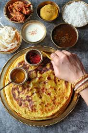

MAHARASHTRIAN FAMOUS FOOD
🥯Puran Poli🥯

Ingredients
🌾 For the Dough (Poli):
- 1 cup Wheat flour (atta)
- ½ cup All-purpose flour (maida) (optional for softness)
- 2 tbsp Oil or ghee
- Water (as needed to knead the dough)
- A pinch of Salt
🫘 For the Filling (Puran):
- 1 cup Chana dal (split Bengal gram)
- ¾ to 1 cup Jaggery (grated or powdered)
- ½ tsp Cardamom powder (elaichi)
- A pinch of Nutmeg powder (jaiphal)
- 1 tbsp Ghee
🧈 For Cooking:
- Ghee (for roasting the polis)
🤔How To Make Puan Poli
This video help you to make puran poli🤩